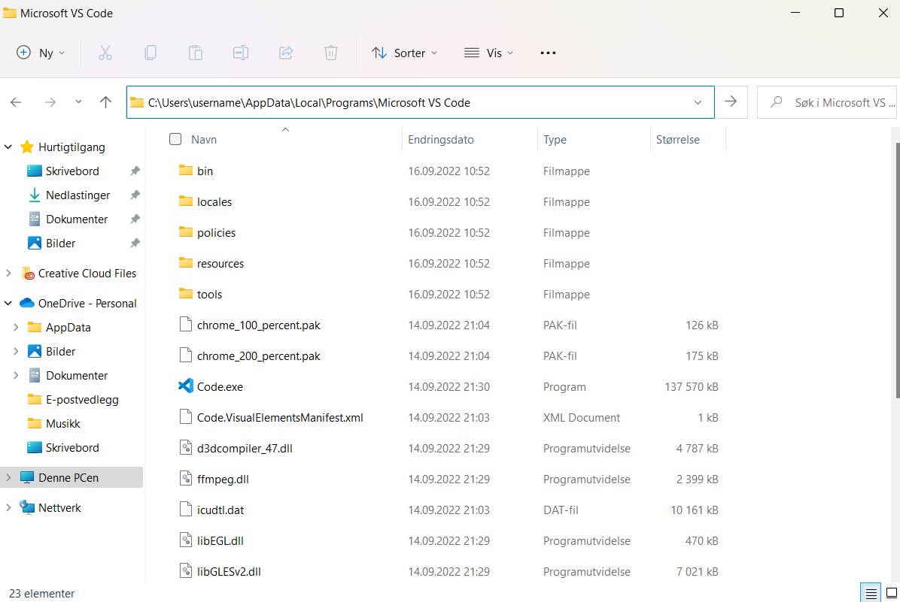

visual studio code installasjon og bruker hjelp
hva er visual studio code
visual studio code er en kildekoderedigerer laget av microsoft
hvordan installere visual studio code
1. gå inpå code.visualstudio.com eller trykk her
2. når du er inpå netsiden trykk på download for windows

3. når den er ferdig å installere visual studio code kjør installereren (VSCodeUserSetup-{version}.exe)
4. normalt set er visual studio code installert under C:\Users\{Username}\AppData\Local\Programs\Microsoft VS Code
hvordan bruke mapper
når du jobber i visual studio code bruker vi mapper for vært prosjekt altså en ny mappe for vert prosjekt. grunnen til at vi gjør dette er fordi at da blir det mer oversiktelig
hvordan installere plugins
1. åpne visual studio code
2. gå til extensions

3. skriv in i søke feltet det du hvil installere eller filtrer for å finne det

4. trykk på plug-inen du vil installere og trykk på install